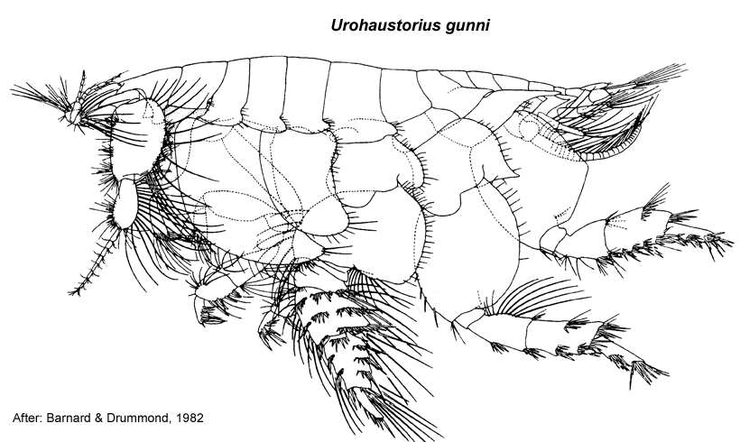

Urohaustorius gunni Barnard & Drummond, 1982: 103, figs 36, 37.
Type Material. Lodged in the AM.
Type Locality. 500 m east of Belmonst Beach, New South Wales (33º02'36"S, 151º40'56"E).
Description.Antenna 1 peduncular article 1 setal row with
only slender setae, proximal pair of setae simple; accessory flagellum
6 -articulate; primary flagellum 6–8 -articulate. Antenna 2 peduncular article 4 main setal row with only slender setae, proximal part of row evenly angled. Mandible incisors with 2 weak teeth. Maxilla 1 palp with some setae displaced subapically.
Gnathopod 1 simple; coxa well developed, sickle-shaped, slightly larger than coxa 2. Gnathopod 2 minutely chelate, propodus palm obtuse. Pereopod 3 coxa large, larger than coxa 4. Pereopod 4 coxa large, posteroventral lobe absent. Pereopod 5 basis without mediofacial brush of setae; dactylus with robust setae arranged in single row. Pereopod 6
basis moderately expanded, margins parallel; merus with slender setae
on posterior margin not continuous to apex, a small gap occurs between
distal most setae and robust seta at corner; dactylus vestigial. Pereopod 7 coxa forming long posterior spine; basis fully expanded, with slender setae along posteroproximal margin; dactylus vestigial.
Epimeron 2 subequal in size to epimeron 3, more setose than epimeron 3. Epimeron 3 posteroventral corner with small spine. Uropod 1 inner ramus well devloped, subequal in length to outer ramus, not fused to peduncle. Uropod 2 inner ramus well devloped, subequal in length to outer ramus, not fused to peduncle. Telson longer than broad, entire.
Distribution.Australia: 4–16 km south of the Hunter River, New South Wales.

___________________________
This
publication should be cited as: Kilgallen, N.M. & Lowry, J.K. 2008.
Urohaustoriidae (Amphipoda): World Genera and Species. Version 1. 1
January 2008. http://crustacea.net.